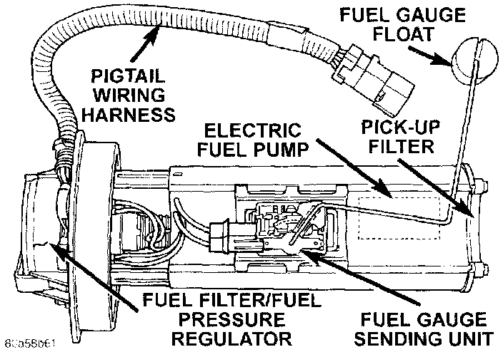
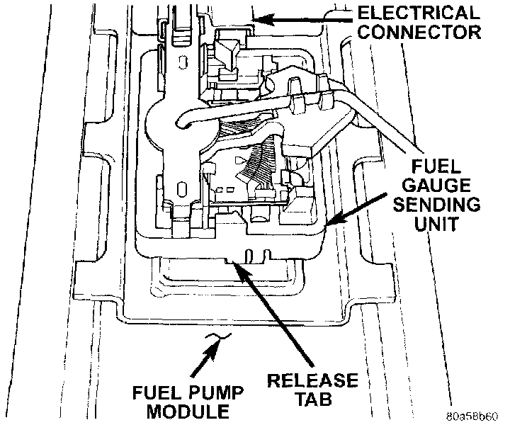

Fuel Gauge Sender: Service and Repair
FUEL GAUGE SENDING UNITFig. 28 Fuel Pump Module:

The fuel gauge sending unit ([1][2]fuel level sensor) and float assembly is located on the side of fuel pump module. The fuel pump module is located on top of fuel tank.
REMOVAL
1. Remove fuel tank.
2. Remove fuel pump module.
3. Remove electrical wire connector at sending unit terminals.
Fig. 29 Fuel Gauge Sending Unit Release Tabs:

4. Press on release tab to remove sending unit from pump module.
INSTALLATION
1. Position sending unit to pump module and snap into place.
2. Connect electrical connector to terminals.
3. Install fuel pump module.
4. Install fuel tank.